Laser CO2 TEA accordable de la société EDINBURGH INSTRUMENTmodel : MTL5 ce laser impulsionel peut travailler en 3 régime différent soit:
En monomode avec sélection de la fréquence entre 9.2 et 10.8 micron grâce à un réseau de diffraction de 910 lignes/cm et une énergie de 50mJ en 50ns (1MW)
En monomode TEM00 sur plusieurs lines avec une énergie de 80mJ en 50ns (1.6MW)
En multimodes avec 160mJ en 50ns soit 3200kW pointe !
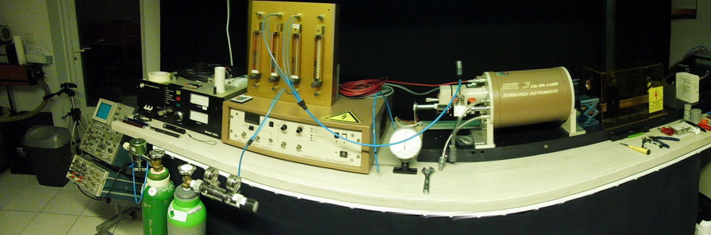
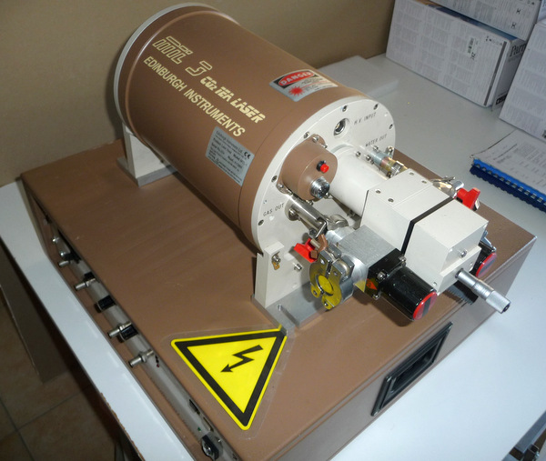
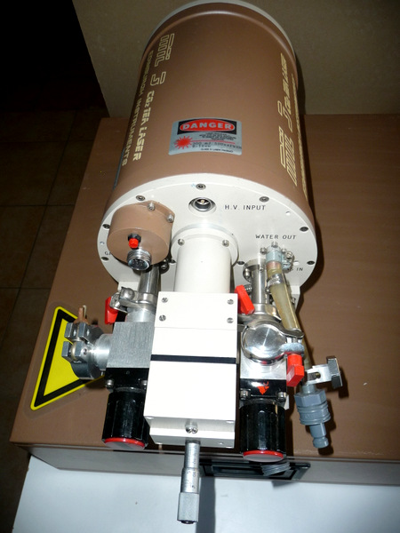
La décharge homogène se produit entre 2 électrodes en laiton polie au profile de Rogowski. Le volume occupé par la décharge transversal est de 10mm x 10mm x 140mm soit 14cm3 . La préionisation est assurée par 24 éclateurs couplés à des capacités. Le résonateur optique se compose d'un miroir totalement réflecteur ou d'un réseau de diffraction positionné derrière une fenêtre de Brewster et d'un miroir de sortie semi-transparent de 80% de réflection. La distance entre les miroirs est de 380mm. Un système de circulation des gaz se fait au moyen de deux ventilateur radiaux permettant d'obtenir un flux de gaz homogène sur toute la longueur de décharge permettant de travailler jusqu'à 100Hz. Il y a également un échangeur de chaleur en aluminium pour refroidir les gaz de la décharge. Le mélange gazeux conseillé est de 30% CO2 30% N2 40% He. Je dispose d'un mélange 20/20/60 ce qui diminue un peu l'énergie de sortie par contre j'aurais une décharge plus homogène. On peut travailler avec un débit de mélange de 2-4 l/min selon la fréquence de répétition pour obtenir l'énergie maximum. L'autre possibilité est de laisser en permanence un débit de 100 ml/min 24h/24 ce qui fait une économie car quand on reprend le travail on n'est pas obliger de retirer au vide les 30 litres de la cavité. Une troisième possibilité c'est de travailler en cavité fermée pour une durée de 24h mais en ajoutant de l'hydrogène et du monoxyde de carbone moins d'un pourcent.
VIDEO en HD
DEMONTAGE DE LA TETE LASER
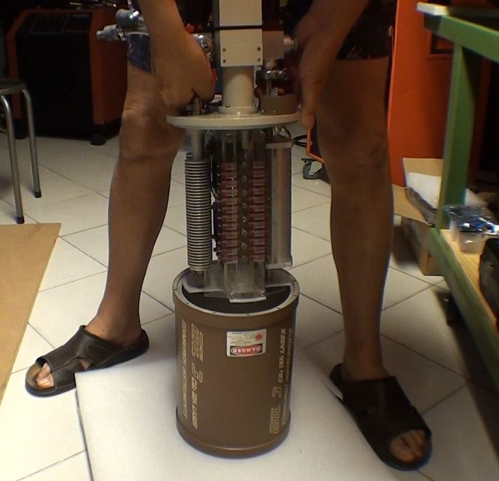
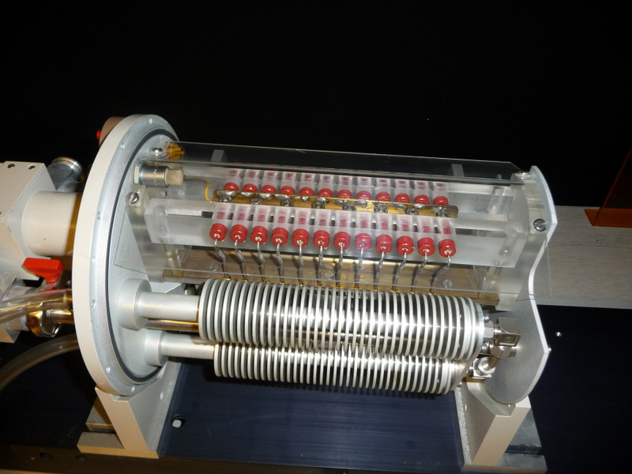
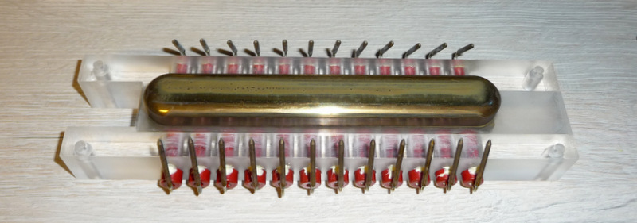
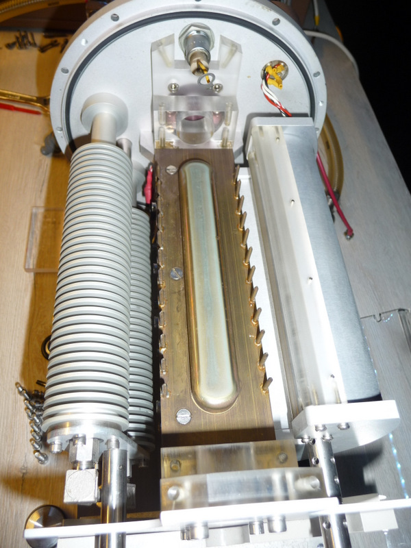
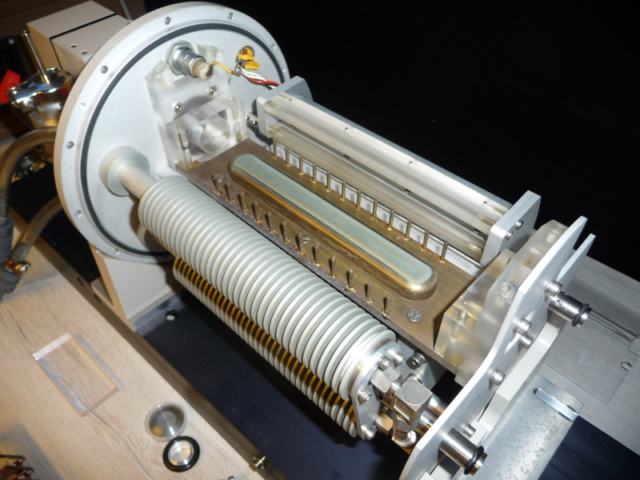
VIDEO en HD
GRATING (réseau de diffraction) Le réseau de diffraction sert à obtenir une émission laser sur une seule raie d'émission. On obtient 58 raies d'émission entre 9.2 et 10.8 microns avec le CO2 au moyen du micromètre situé à l'arrière du laser.
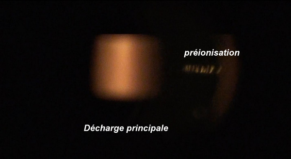
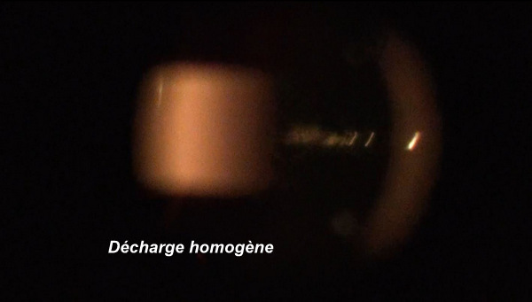
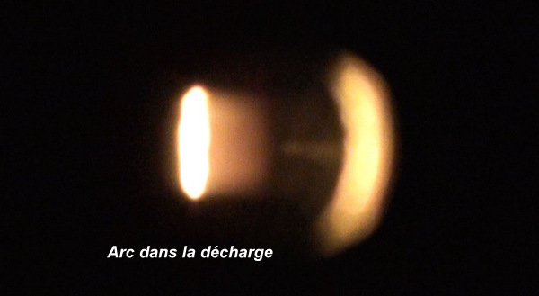
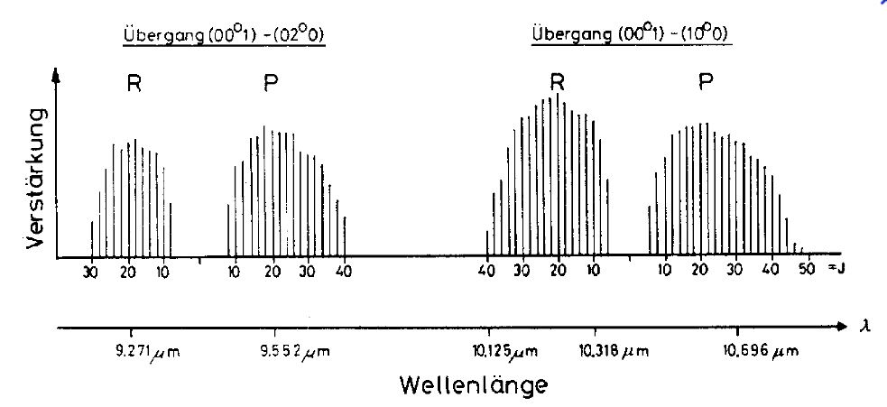
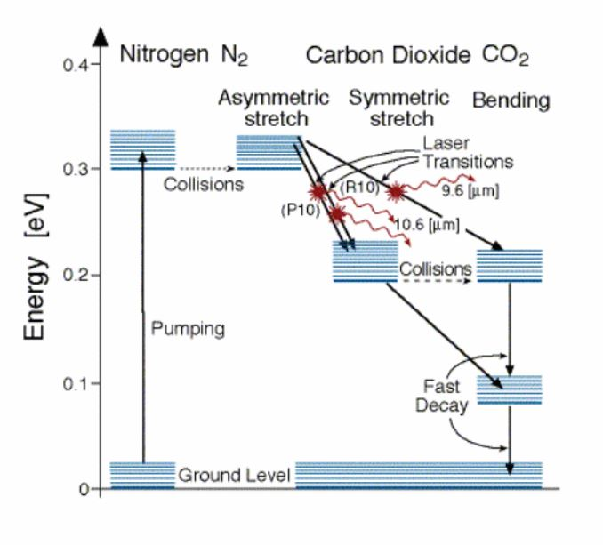
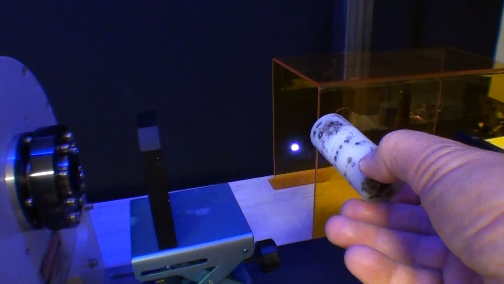
Claquage diélectrique de l'air avec la raie 10R22, la sortie est monomode avec un diamètre de 6mm et une divergence de 1mrad.
Après avoir résolu quelques problèmes sur le laser, je vais faire des mesures d'énergie sur chaque raie.
On peut faire des claquages jusqu'à 100 pulses par seconde !
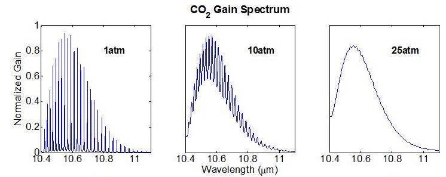
A pression atmosphérique la courbe de gain se présente sous forme de fréquences discrètes environ 60 raies entre 9.2 et 10.8 microns. Le réseau de diffraction permet d'obtenir une émission sur une seul raie bien précise. Une expérience à réaliser est de voir si l'on peut obtenir un continuum en augmentant la pression à 3 bars tout en conservant une décharge homogène. (à tester)
Une autre expérience intéressante serait de réaliser la génération d'harmoniques (doublage et triplage de fréquence) et émission des lignes Stokes et anti-Stokes dans un monocristal de GaAs de 70mm de long.
voici ce que j'ai trouvé sur le net !
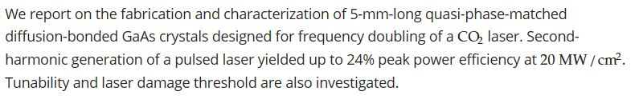
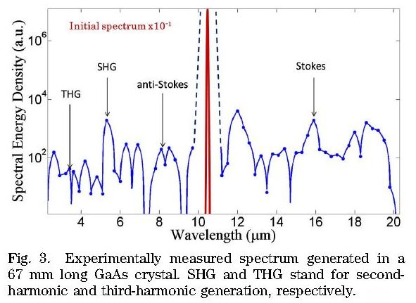
Le grating (réseau de diffraction) se compose d'un substrat en cuivre avec 910 traits au centimètre monté sur un système à bascule permettant au moyen d'une vis micrométrique de change l'angle d'incidence par rapport à l'axe optique ce qui permet de sélectionner la raie d'émission du laser.
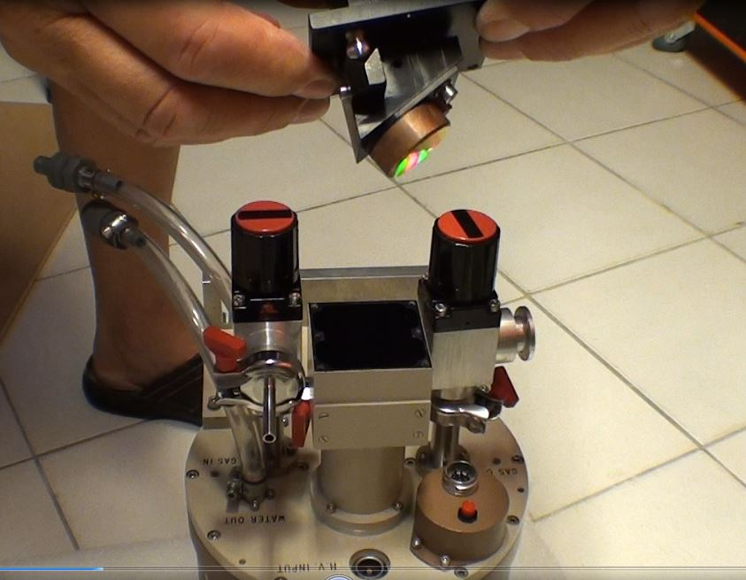
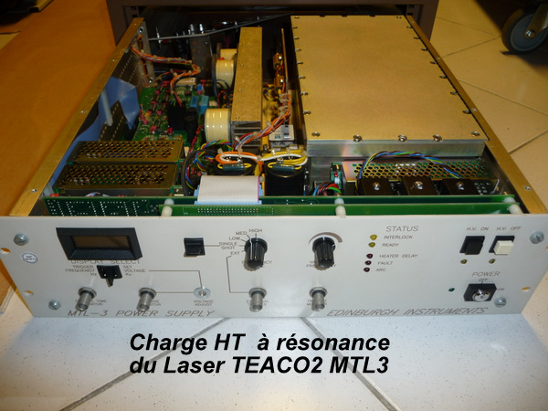
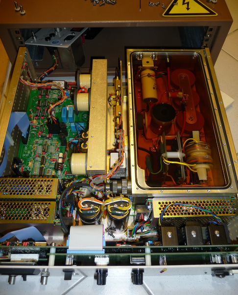
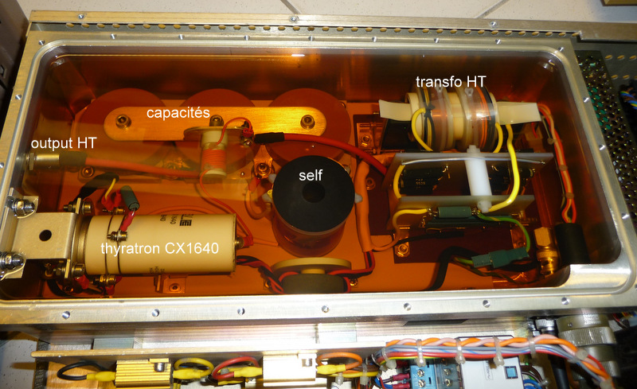
La charge des condensateurs (24 pièces) se trouvant dans la tête laser se fait au moyen d'une alimentation HT de charge par résonance.
Ce qui permet d'obtenir une cadence de répétition de 0.1Hz à 200Hz.
La commutation se fait par un thyratron à hydrogène Type CX1640. Dans la bac à huile se trouve la transfo HT avec les diodes de redressement, les capacités HT au titanate de baryum, le thyratron, la self de charge et la diode de charge.